La red italiana de Internet quedó el viernes por la noche totalmente colapsada por 15 millones de ordenadores que intentaron entrar en el portal de Wind , que transmitió la primera aparición pública de la mítica cantante Mina , tras 23 años de ausencia.
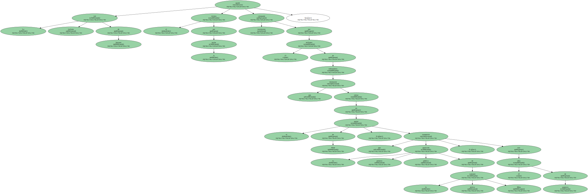La red italiana de Internet quedó el viernes por la noche totalmente colapsada por 15 millones de ordenadores que intentaron entrar en el portal de Wind , que transmitió la primera aparición pública de la mítica cantante Mina , tras 23 años de ausencia.
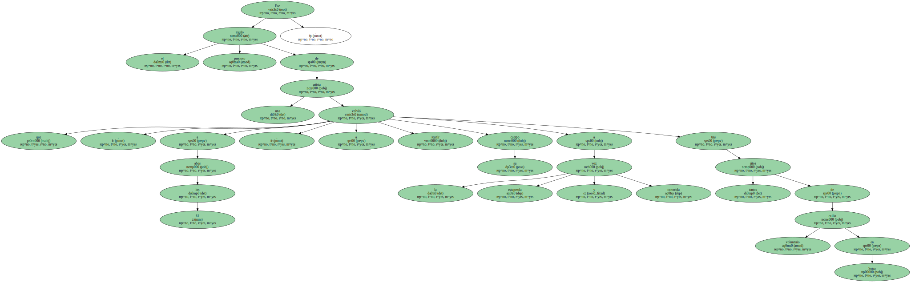Fue el precioso regalo de una artista que , a los 61 años , volvió a reunir su cuerpo a la estupenda y conocida voz tras tantos años de exilio voluntario en Suiza.
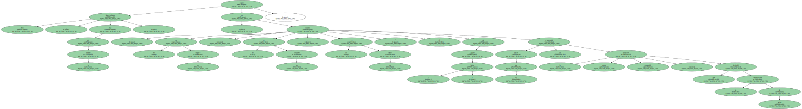" No es un regreso , no es un concierto , no es un show " , explicó Massimiliano Pani , hijo de la estrella , en el estudio de Lugano ( Suiza ) desde el que se retransmitió la sabia operación comercial , que desbordó la organización de Wind.
El evento había sido anunciado varias semanas antes , con breves espots en la RAI , la televisión pública , artículos de prensa y comentarios radiofónicos , como nunca se había visto.
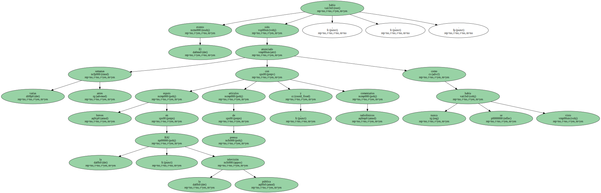Sólo 250.000 usuarios lograron seguir en directo los 63 minutos de interpretaciones , un récord mundial diez veces superior al que había alcanzado Madonna en Internet.
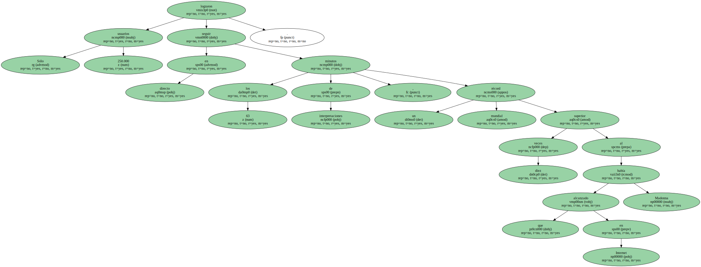El alud de contactos obligó a los organizadores a retrasar durante una hora el concierto anunciado , lo cual multiplicó las protestas e insultos que llovieron sobre la dirección electrónica del portal.
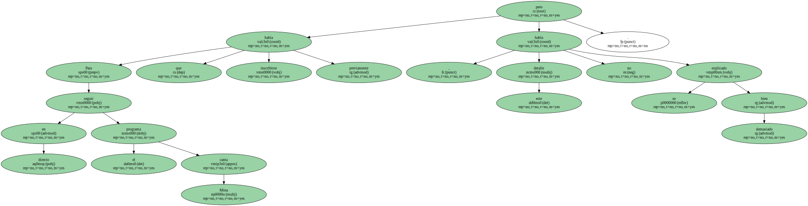Para seguir en directo el programa Mina canta había que inscribirse previamente , pero este detalle no se había explicado demasiado bien.
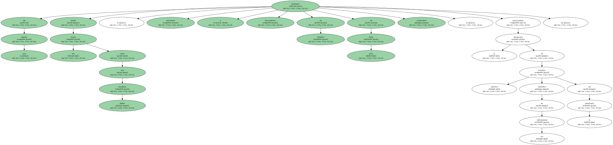De manera que desde tres horas antes del momento fijado , servidores y proveedores de Internet de toda Italia quedaron colapsados , provocando la decepción de muchos usuarios reunidos en los café-internet de la península.
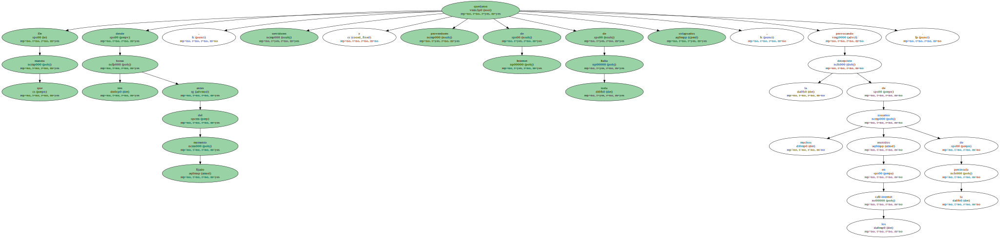En el programa , Mina rió con frecuencia , bromeó con músicos y directores , observó los monitores y sólo al final se dirigió a la cámara para saludar al público con la mano.
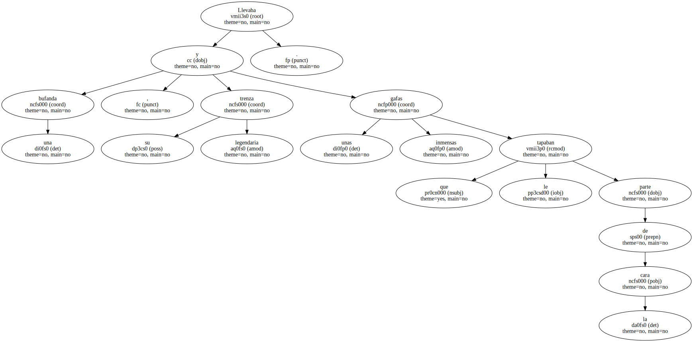Llevaba una bufanda , su legendaria trenza y unas gafas inmensas que le tapaban parte de la cara.
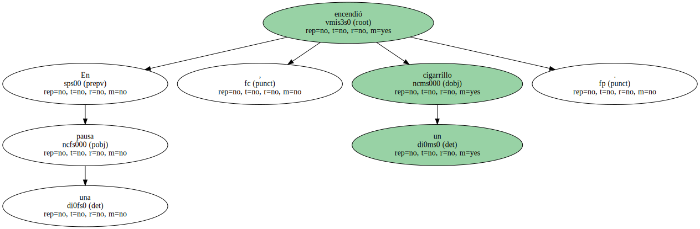En una pausa , encendió un cigarrillo.

El DVD con el concierto completo se pondrá a la venta el próximo octubre , pero la RAI seguirá retransmitiendo canciones en los próximos días.
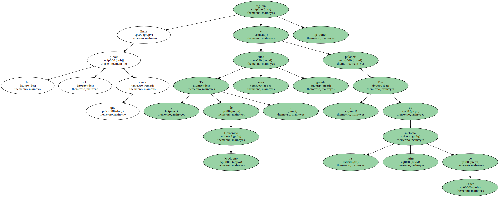Entre las ocho piezas que canta figuran Tu siIna cosa grande , de Domenico Modugno , y Tres palabras , de la melodía latina de Farrés.

La voz de " la más grande cantante blanca del mundo " , como la definió Louis Armstrong , permanece intacta.
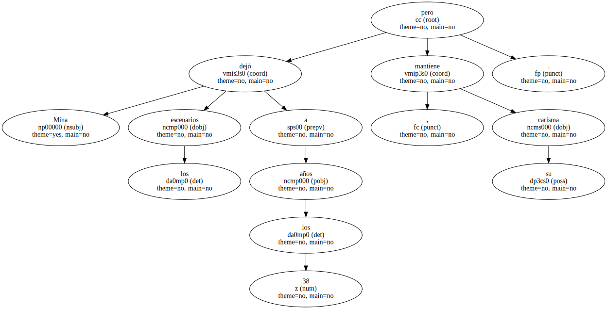Mina dejó los escenarios a los 38 años , pero mantiene su carisma.
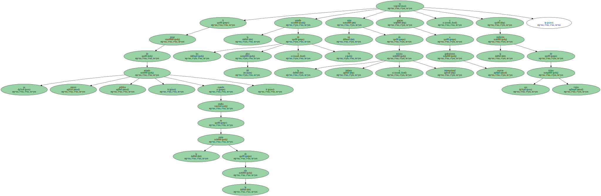A pesar de su precoz retirada pública , cuando estaba en la cresta de la ola , la estrella de los años 60 y 70 es un mito de la música italiana e internacional gracias a nuevas grabaciones y a la reedición de sus viejos éxitos.
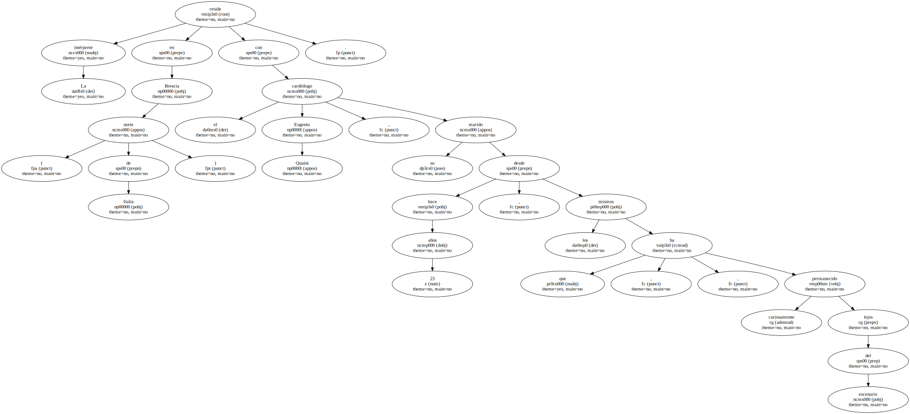La intérprete reside en Brescia ( norte de Italia ) con el cardiólogo Eugenio Quaini , su marido desde hace 23 años , los mismos que , curiosamente , ha permanecido lejos del escenario.

La intérprete reside en Brescia ( norte de Italia ) con el cardiólogo Eugenio Quaini , su marido desde hace 23 años , los mismos que , curiosamente , ha permanecido lejos del escenario.
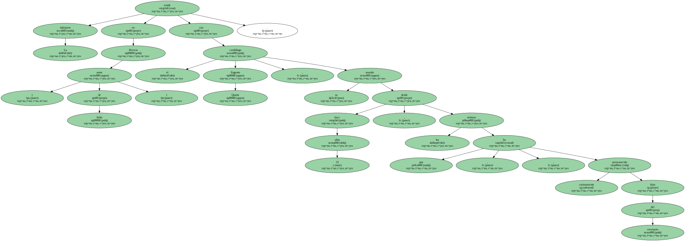La intérprete reside en Brescia ( norte de Italia ) con el cardiólogo Eugenio Quaini , su marido desde hace 23 años , los mismos que , curiosamente , ha permanecido lejos del escenario.
La intérprete reside en Brescia ( norte de Italia ) con el cardiólogo Eugenio Quaini , su marido desde hace 23 años , los mismos que , curiosamente , ha permanecido lejos del escenario.